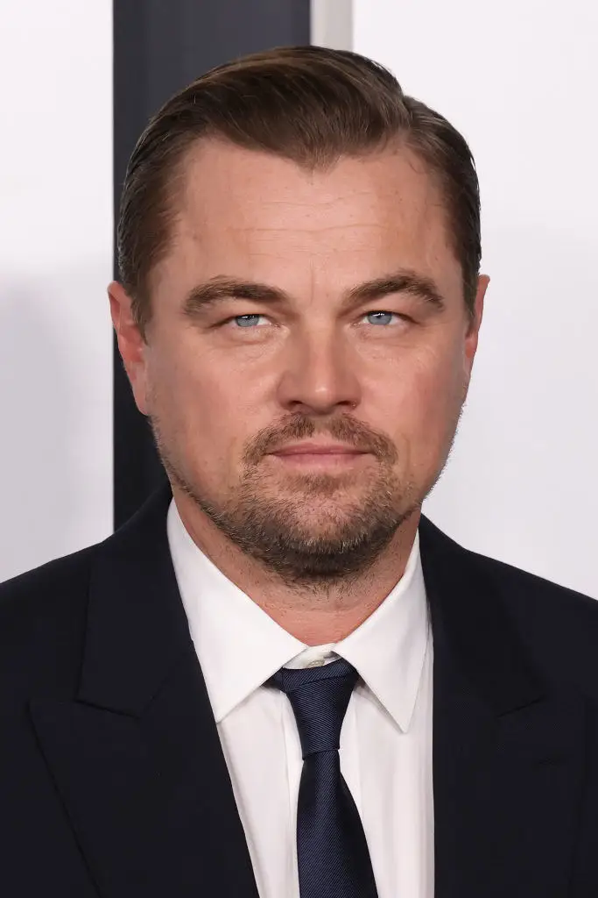
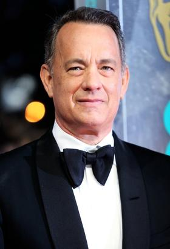
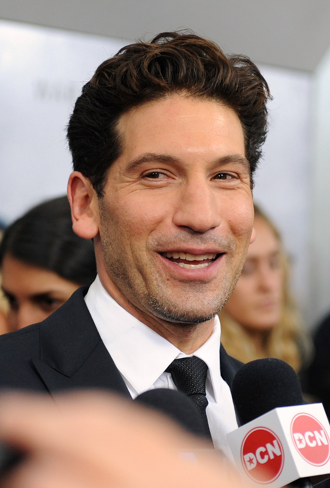

Al Pacino

Nacimiento: 25 de abril de 1940 en Nueva York, Estados Unidos.
Al Pacino es un famoso actor conocido por sus icónicos papeles en películas como "El Padrino" (1972) y "Esencia de mujer" (1992), por el cual ganó un Premio de la Academia. Nacido en el Bronx, Nueva York, mostró su talento actoral desde joven. A lo largo de su carrera, ha dejado una huella indeleble en el cine y el teatro, convirtiéndose en una leyenda de la actuación.Jake Gyllenhaal

Nacimiento: 19 de diciembre de 1980 en Los Ángeles, California.
Jake Gyllenhaal es conocido por su versatilidad y ha participado en películas exitosas como "Brokeback Mountain" (2005) y "Nightcrawler" (2014). Su talento actoral le ha valido múltiples nominaciones a premios importantes.Brad Pitt

Nacimiento: 18 de diciembre de 1963 en Shawnee, Oklahoma.
Brad Pitt es un famoso actor y productor de cine. Alcanzó la fama en la década de 1990 con películas como "Thelma & Louise" y ha continuado protagonizando éxitos de taquilla como "Fight Club" y "Inglourious Basterds". También es un productor exitoso a través de Plan B Entertainment, y ha recibido premios de la Academia por su actuación en "12 Years a Slave". Además, es conocido por su trabajo humanitario y activismo social. Brad Pitt es una de las figuras más influyentes en la industria del entretenimiento.Christian Bale

Nacimiento: 30 de enero de 1974 en Haverfordwest, Gales.
Christian Bale es un versátil actor conocido por sus notables transformaciones físicas en películas como "El Maquinista" y su icónico papel como Batman en la trilogía "The Dark Knight". Ha recibido premios de la Academia, incluyendo uno por "The Fighter". Bale es admirado por su dedicación y versatilidad en la actuación, consolidándose como una figura destacada en Hollywood.Leonardo DiCaprio
Nacimiento: 11 de noviembre de 1974 en Los Ángeles, California.
Leonardo DiCaprio es un reconocido actor y productor de cine. Saltó a la fama en los años 90 con películas como "What's Eating Gilbert Grape" y "Romeo y Julieta". Ha protagonizado éxitos de taquilla como "Titanic", "Inception" y "The Revenant", por el que finalmente ganó un premio de la Academia. Además de su talento actoral, es conocido por su activismo ambiental y su trabajo filantrópico. DiCaprio es una de las figuras más influyentes de la industria del entretenimiento.Tom Hanks
Nacimiento: 9 de julio de 1956 en Concord, California.
Tom Hanks es un renombrado actor y productor de cine. Ha protagonizado icónicas películas como "Forrest Gump", "Philadelphia", y "Rescatando al Soldado Ryan". Ganador de múltiples premios de la Academia, Hanks es reconocido por su versatilidad y carisma en la actuación. Es una figura destacada en Hollywood y apreciado por su calidad actoral y contribuciones al cine.Natalie Portman

Nacimiento: 9 de junio de 1981 en Jerusalén, Israel.
Natalie Portman, es una destacada actriz y productora de cine. Saltó a la fama con su papel en "El Profesional" a los 13 años y ganó reconocimiento internacional por su actuación en "El Cisne Negro," que le valió un premio de la Academia. Además de su éxito en la actuación, Portman es conocida por su inteligencia y activismo en causas sociales. Es una figura influyente en la industria cinematográfica.Ben Stiller
Nacimiento: 30 de noviembre de 1965 en Nueva York.
Ben Stiller, es un actor, comediante, director y productor estadounidense. Es conocido por sus papeles cómicos en películas como "Zoolander", "Loco por Mary" y la serie "Una Noche en el Museo". Stiller ha dejado su huella no solo como actor, sino también como director en películas como "Reality Bites" y "Zoolander". Su talento en la comedia y su contribución al cine le han ganado reconocimiento en la industria del entretenimiento.Owen Willson
Nacimiento: 18 de noviembre de 1968 en Dallas, Texas.
Owen Wilson, es un actor y guionista estadounidense conocido por su estilo distintivo y su participación en exitosas comedias como "Zoolander", "Starsky & Hutch" y "Wedding Crashers". Wilson también es reconocido por su colaboración frecuente con Wes Anderson en películas como "The Royal Tenenbaums" y "The Grand Budapest Hotel". Su carisma y humor único lo han convertido en una figura querida en la industria del cine.Will Smith

Nacimiento: 25 de septiembre de 1968, Filadelfia, Pensilvania.
Will Smith, es un icónico actor, productor y rapero estadounidense. Comenzó su carrera como rapero antes de alcanzar la fama con la serie de televisión "The Fresh Prince of Bel-Air". Smith se consolidó como estrella de cine con éxitos como "Men in Black", "Independence Day" y "The Pursuit of Happyness", por el cual recibió una nominación al premio de la Academia. Su versatilidad en la actuación y su éxito en la música lo han convertido en una figura influyente en la industria del entretenimiento.Robert De Niro
Nacimiento: 17 de agosto de 1943 en Nueva York.
Robert De Niro, es un legendario actor, productor y director estadounidense. Con una carrera que abarca décadas, De Niro ha dejado una huella indeleble en el cine. Ha protagonizado icónicas películas como "Taxi Driver", "The Godfather Part II", y "Goodfellas", y ha recibido numerosos premios, incluyendo dos premios de la Academia. Su habilidad para transformarse en sus personajes y su contribución al mundo del cine lo han convertido en una figura venerada y respetada en la industria.Jennifer Aniston
Nacimiento: 11 de febrero de 1969 en Los Ángeles, California.
Jennifer Aniston, es una destacada actriz, productora y empresaria estadounidense. Ganó reconocimiento mundial por su papel como Rachel Green en la exitosa serie de televisión "Friends". A lo largo de su carrera, Aniston ha participado en diversas películas, incluyendo "Marley & Me", "The Break-Up" y "The Morning Show", esta última le valió un premio Emmy. Su carisma y talento la han convertido en una figura influyente y querida en la industria del entretenimiento.Mark Wahlberg
Nacimiento:5 de junio de 1971 en Boston, Massachusetts.
Mark Wahlberg, es un actor, productor, empresario y exrapero estadounidense. Comenzó su carrera como cantante en el grupo Marky Mark and the Funky Bunch antes de ganar reconocimiento en el cine con películas como "Boogie Nights", "The Departed" y "The Fighter", que le valió una nominación al Premio de la Academia. Wahlberg también es conocido por su éxito en la producción y empresariado, destacándose en diversas industrias. Su versatilidad y éxito en diferentes campos lo han convertido en una figura respetada en el mundo del entretenimiento.Matt Damon

Nacimiento: 8 de octubre de 1970 en Cambridge, Massachusetts.
Matt Damon, es un actor, guionista y productor estadounidense. Saltó a la fama con el guion de "Good Will Hunting", por el cual ganó un Premio de la Academia. A lo largo de su carrera, Damon ha protagonizado una variedad de películas exitosas, incluyendo la serie "Bourne", "The Martian" y "Ocean's Eleven". Además de su éxito en la actuación, es conocido por su trabajo humanitario. Damon es una figura respetada y versátil en la industria del entretenimiento.Dwayne Johnson

Nacimiento: 2 de mayo de 1972 en Hayward, California.
Dwayne Johnson, es un actor, productor y ex luchador profesional estadounidense. Conocido en el mundo del entretenimiento como "The Rock", Johnson se destacó como luchador en la WWE antes de incursionar con éxito en el cine. Ha protagonizado películas populares como "Jumanji: Welcome to the Jungle", "Fast & Furious" y "Moana". Además de su carrera en el entretenimiento, Johnson es reconocido por su caridad y participación en proyectos benéficos. Es una figura carismática y versátil en la industria del entretenimiento.Sylvester Stallone
Nacimiento: 6 de julio de 1946 en Nueva York
Sylvester Stallone, es un actor, guionista y director estadounidense. Ganó fama mundial por su interpretación de Rocky Balboa en la franquicia "Rocky", que él escribió y protagonizó. También es conocido por su papel en "Rambo" y ha participado en numerosas películas de acción a lo largo de su carrera. Stallone ha dejado una marca duradera en la industria del cine y es considerado una leyenda en el género de acción.Scarllet Johansson

Nacimiento: 22 de noviembre de 1984 en Nueva York.
Scarlett Johansson, es una talentosa actriz y cantante estadounidense. Comenzó su carrera actoral a una edad temprana y ganó reconocimiento por su actuación en películas como "Lost in Translation" y "Girl with a Pearl Earring". Johansson ha interpretado roles diversos en películas como "The Avengers", "Marriage Story" y "Jojo Rabbit", recibiendo numerosos elogios y premios. Además de su éxito en la actuación, también ha incursionado en la música. Johansson es considerada una de las actrices más destacadas y versátiles de su generación.Samuel L. Jackson
Nacimiento: 21 de diciembre de 1948 en Washington D.C..
Samuel L. Jackson, es un icónico actor y productor estadounidense. Con una carrera extensa y versátil, Jackson ha participado en una amplia gama de películas, incluyendo "Pulp Fiction", "The Avengers" y "Django Unchained". Su distintiva presencia en la pantalla y su habilidad actoral le han valido elogios y reconocimientos a lo largo de los años. Jackson es una figura respetada y prolífica en la industria del cine.Jon Bernthal
Nacimiento: 20 de septiembre de 1976 en Washington D.C..
Jon Bernthal, es un actor estadounidense conocido por su intensidad y habilidad en la interpretación. Se hizo destacar por su papel en la serie de televisión "The Walking Dead", donde interpretó a Shane Walsh. Bernthal también ha participado en películas como "The Wolf of Wall Street" y ha ganado reconocimiento por su papel como Frank Castle/The Punisher en la serie de Marvel "The Punisher". Su presencia magnética en la pantalla y su dedicación al arte actoral lo han convertido en una figura respetada en la industria del entretenimiento.Cillian Murphy
Nacimiento: 25 de mayo de 1976 en Douglas, Cork, Irlanda.
Cillian Murphy, es un talentoso actor conocido por su versatilidad y presencia en la pantalla. Saltó a la fama con sus roles en películas dirigidas por Christopher Nolan, como "Batman Begins" y "Inception". Además, ha recibido aclamación por su trabajo en películas como "28 Days Later" y la serie de televisión "Peaky Blinders". La habilidad de Murphy para sumergirse en una amplia variedad de personajes lo ha convertido en una figura respetada en la industria cinematográfica.Angelina Jolie
Nacimiento: 4 de junio de 1975 en Los Ángeles, California.
Angelina Jolie, es una actriz, directora y activista humanitaria estadounidense. Ganadora de un Premio de la Academia por su actuación en "Girl, Interrupted", Jolie ha protagonizado numerosas películas exitosas, como "Lara Croft: Tomb Raider" y "Maleficent". Además de su carrera en el entretenimiento, es conocida por su trabajo en asuntos humanitarios y derechos de refugiados. Jolie es una figura influyente tanto en la industria del cine como en el ámbito humanitario.Steve Carrel

Nacimiento: 16 de agosto de 1962 en Concord, Massachusetts.
Steve Carell, es un actor, comediante y productor estadounidense. Ganó reconocimiento por su papel en la versión estadounidense de "The Office", donde interpretó a Michael Scott. Carell también ha protagonizado exitosas películas cómicas como "The 40-Year-Old Virgin", "Anchorman" y "Despicable Me". Su talento versátil le ha permitido transitar con éxito entre la comedia y el drama, consolidándose como una figura querida en la industria del entretenimiento.